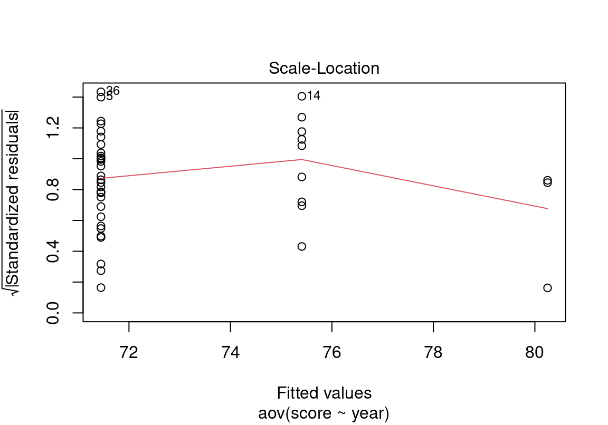
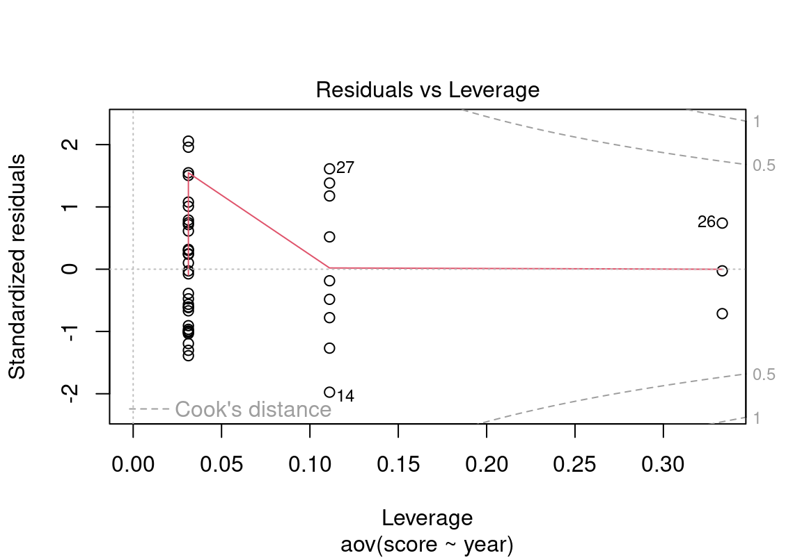
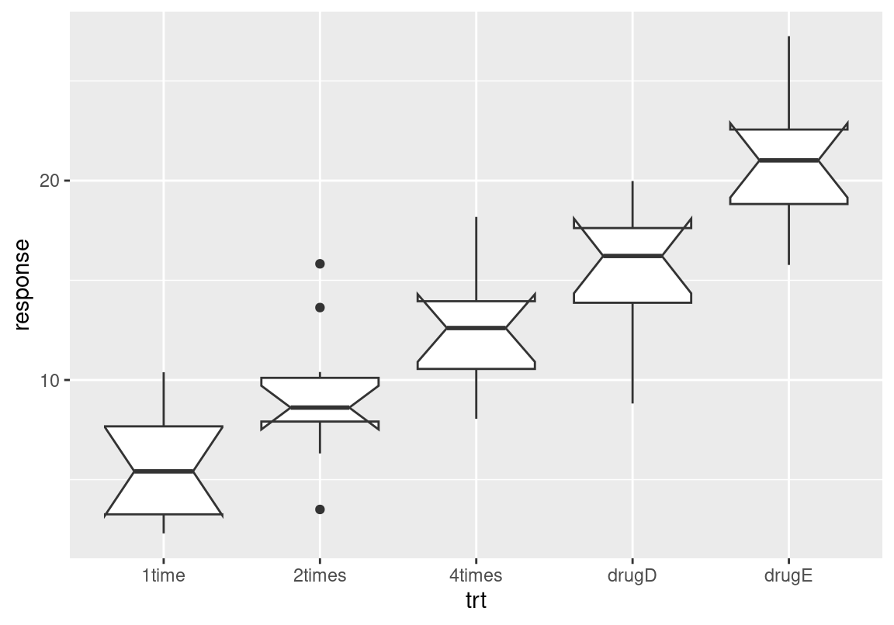
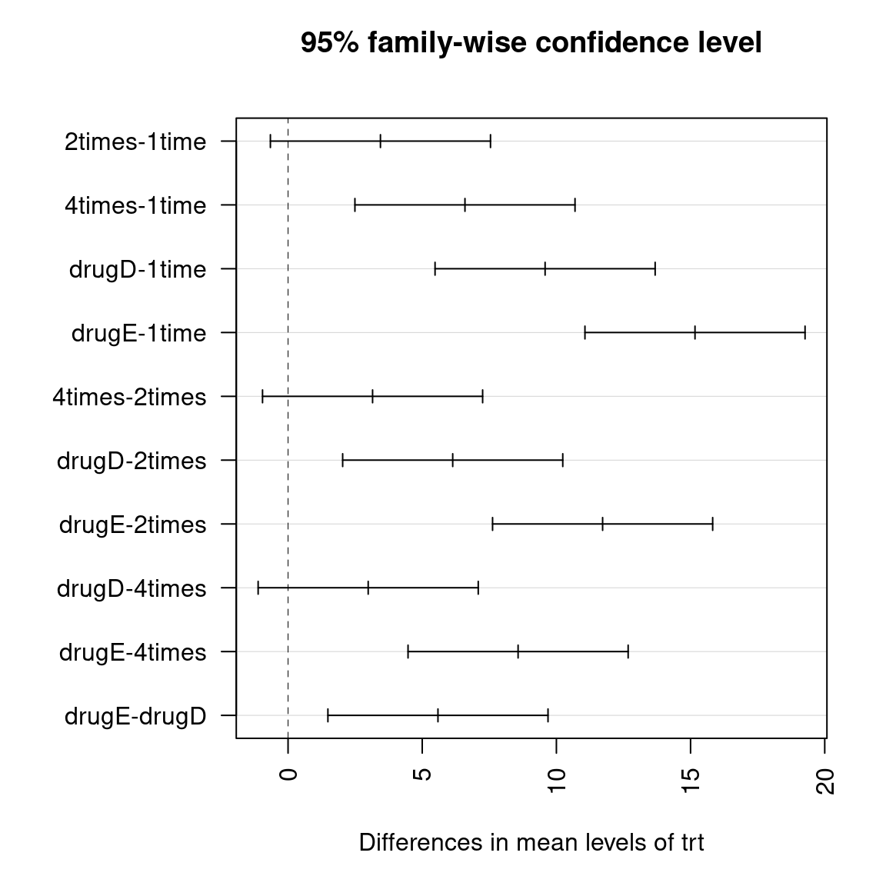
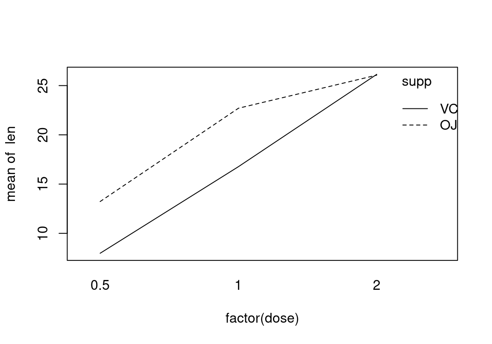
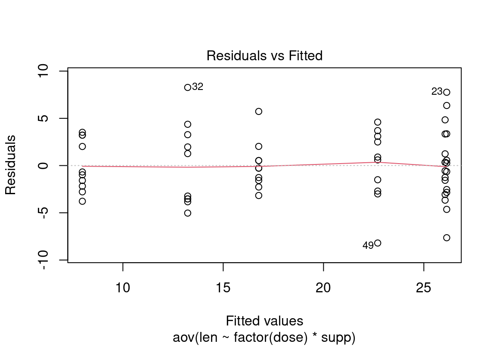
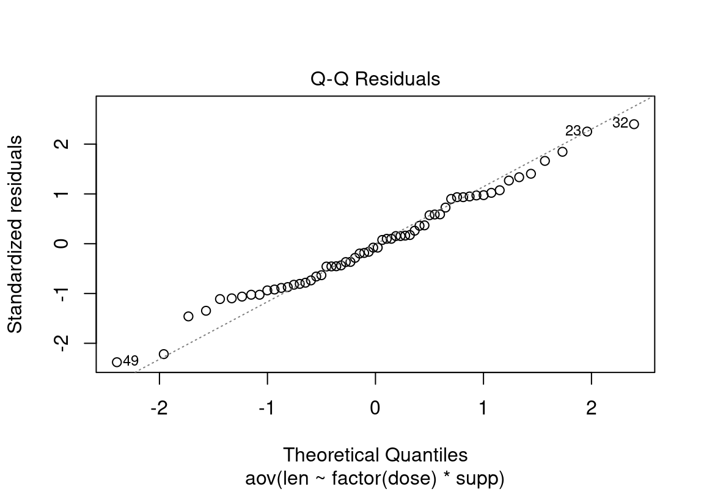

Chapter 13 분산 분석
앞 장에서 두 모집단의 모평균의 차이에 대한 가설검정을 하는 방법을 보았다. 만약 모집단이 세 개 이상으로 늘어나면, t-분포를 사용하여 더 이상 가설검정을 할 수 없다. 이 경우에는 Fisher에 의해 개발된 분산분석(ANalysis Of VAriance; ANOVA) 기법을 사용하여 검정을 수행하여야 한다.
분산분석은 역사적으로 실험계획과 밀접한 관계를 가지며 발전해 왔다. 특히 농업 분야의 실험과 연관되어 발전하였다. 비료에 의해 얻어지는 어떤 농작물의 산출물의 양을 측정하는 실험을 고려해 보자. 이 실험을 위해 다른 조건을 같게 한 후, A, B, C라는 서로 다른 비료를 사용하여 산출물의 양을 실험하였다고 하자.
- 이러한 실험계획에서 비료의 종류를 요인(factors)이라고 한다.
- 서로 다른 비료 A, B, C를 수준(levels) 또는 처리(treatments)라고 한다.
- 실험의 최종 결과인 산출물의 양을 반응변수(response variables)라고 한다.
- 수준에 따라 반응변수의 평균에 차이가 나는 것을 요인의 효과(effects)라고 한다.
분산 분석은 요인의 효과는 없다라는 귀무가설과 요인의 효과가 있다라는 대립가설에 대한 가설검정을 수행한다. 분산 분석에서 수준이 2개인 경우는 앞선 본 두 모집단의 모평균의 차이 검정으로 효과의 차이를 분석할 수 있으나, 3 개 이상의 수준이 있으면 분산 분석을 통해 가설검정을 수행하여야 한다.
분산 분석은 요인이 한 개인 경우뿐 아니라 두 개인 경우에도 분석이 가능하다. 예를 들어 앞의 실험에서 비료의 효과만 보는 것이 아니라 토양의 특성에 따라 비료의 효과가 달라지는지를 보고자 한다면, 비료라는 한 요인과 토질이라는 또 다른 요인이 농작물의 산출에 주는 효과를 분석하게 된다. 요인이 하나인 분산 분석을 일원분류 분산분석(one-way ANOVA)이라 하고, 요인이 두 개인 분산 분석을 이원분류 분산분석(two-way ANOVA)라고 한다.
13.1 일원분류 분산분석
13.1.1 개념
\(I\)개의 수준을 가지고 있는 요인으로 실험을 한다고 하자.
각 수준을 수준 \(i, i=1, 2, \ldots, I\)라고 할 때, 수준 \(i\)에서 \(n_i\)만큼 실험을 한다.
\(y_{ik}\)를 수준 \(i\)에서 \(k\) 번째 실험을 했을 때의 반응 변수의 값이라고 하면, 일원분류 분산분석은 다음과 같은 모형을 가정한다.
\[ y_{ik} = \mu_i + \varepsilon_{ik} = \mu + \alpha_i + \varepsilon_{ik} \] 단, \(\mu_i\)는 수준 \(i\)에서의 반응변수의 평균, \(\mu\)는 전체 모평균, \(\alpha_i = \mu_i - \mu\)는 수준 \(i\)의 효과이다. 그리고 오차항 \(\varepsilon \sim N(0, \sigma^2)\)으로 가정한다. 즉, 모든 수준에서 오차항은 평균이 0이고 분산이 같은 정규분포를 따른다고 가정한다.
일원분류 분산분석의 귀무가설은 요인의 효과가 없다는 것으로 다음과 같이 표현할 수 있다.
\[ H_0: \quad \mu_1 = \mu_2 = \cdots = \mu_I \quad \]
또는
\[ H_0: \quad \alpha_1 = \alpha_2 = \cdots = \alpha_I = 0 \]
대립가설은 위의 등식 중 하나 이상이 성립하지 않는다는 것이다.
ANOVA의 가설검정은 전체 평균 중심으로 데이터가 변동하는 이유를 요인에 의해 발생하는 분산과 무작위 오차에 의한 분산으로 분할하여 분석을 한다. (그렇기 때문에 분산 분석이라는 이름이 붙게 되었다.) 표본 데이터의 전체 평균과 각 수준의 평균을 다음처럼 정의하자.
\[\begin{align} \bar{y} =& \frac{\sum_{i=1}^{I} \sum_{k=1}^{n_i} y_{ik}}{n} \\ \bar{y}_{i.} =& \frac{\sum_{k=1}^{n_i} y_{ik}}{n_i} \end{align}\]
단, \(n = \sum_{i=1}^{I} n_i\).
그러면 표본의 전체 평균 \(\bar{y}\)와 각 데이터의 편차의 제곱은 다음처럼 분해된다.
\[\begin{eqnarray} \sum_{i=1}^{I} \sum_{k=1}^{n_i} (y_{ik} - \bar{y})^2 &=& \sum_{i=1}^{I} (\bar{y}_{i.} - \bar{y})^2 &+& \sum_{i=1}^{I} \sum_{k=1}^{n_i} (y_{ik} - \bar{y}_{i.})^2 \\ TSS &=& SST &+& SSE \end{eqnarray}\]
전체 평균에서 데이터의 변동을 TSS(total sum of squares)라고 하고, 전체 평균에서 수준의 평균의 변동을 SST(sum of squares for treatment), 수준의 평균에서 데이터의 변동을 SSE(sum of squares for residual)라고 한다.
일원분류 분산분석에서의 검정통계량 \(F\)는 다음과 같이 정의되고, 자유도가 \((I-1), (n-I)\)인 F-분포를 따른다.
\[ F = \frac{MST}{MSE} = \frac{SST / (I-1)}{ SSE / (n-I)} \sim F(I-1, n-I) \]
귀무가설이 맞지 않으면 요인의 효과에 의해 SST가 커지므로 F-분포로 오른쪽 단측검정을 하게 된다.
일원분류 분산분석의 결과는 다음과 같은 분산분석표로 보통 요약된다.
| 변동 원인 | 자유도 | 제곱합 | 평균제곱합 | F-통계량 |
|---|---|---|---|---|
| 요인 | \(I-1\) | SST | MST | F |
| 오차 | \(n-I\) | SSE | MSE |
13.1.2 aov() 함수
R에서 ANOVA 분석을 수행하는 함수는 aov() 함수이다. 참고로 R에는 anova() 함수도 있는데 이 함수는 회귀 모형 등이 적합된 후 모형들 사이의 분산 분석을 수행할 때 이용된다.
aov() 함수는 첫번째 인수로 ANOVA 모형을 나타내는 수식을, 두번째 인수로 사용할 데이터를 입력받는다.
일원분류 분산분석은 반응변수를 나타내는 열이 y, 요인을 나타내는 열이 f라고 하면 다음 형식으로 수식이 입력된다.
aov(y ~ f, data)요인이 둘 이상인 이원분류 분산분석이나 다른 수치형 변수의 효과를 고려하여 분산 분석을 하는 공분산분석의 경우 수식의 표현이 좀 더 복잡해 진다. 이에 대해서는 각각의 모형을 다룰 때 설명하도록 한다.
이 장에서는 R에서 분산분석을 하는 방법을 설명하기 위해 bizstatp 패키지의 course 데이터를 사용할 것이다. 그런데 course 데이터에서 중간과 기말고사를 보지 않은 학생 정보가 있다. 우리는 이 학생의 정보를 제거한 course_omitted 데이터를 만들어 앞으로 이 데이터를 주로 분석에 사용할 것이다.
course_omitted 데이터는 어떤 과목의 수강생에 대한 정보이다.
이 과목의 최종 점수의 평균이 학년별로 차이가 있었는지에 대해 유의수준 5%에서 가설검정하시오.
Example 13.1는 2, 3, 4 학년의 최종 점수 평균의 차이를 검정하는 문제이다. 3개 이상의 모집단의 평균을 비교해야 하므로 분산 분석을 수행해야 한다. . \(\mu_i\)를 \(i\)-학년의 최종 점수의 평균이라고 하자. 평균 점수에 차이가 있었는지를 검정하는 것이므로 귀무가설은 다음과 같다.
\[ \begin{align} H_0: & \quad \mu_2 = \mu_3 = \mu_4 \\ \end{align} \]
위의 가설을 ANOVA로 가설검정하려면 학년별 최종 점수가 동일한 분산의 정규분포를 따르는지 확인해 보아야 한다.
그런데 일반적으로 각 수준별로 정규성을 검정하는 작업은 번거롭기 때문에 ANOVA 분석을 한 후 잔차(residuals)이 동일한 분산의 정규분포를 따르는지 확인하는 것이 좋다.
현재 year 열은 순서형 범주로 입력되어 있다. ANOVA 분석을 위해 순서형 볌주를 다음처러 명목형 범주로 변경을 한다.
다음은 각 학년의 최종점수가 동일한 분산의 정규분포를 따른다는 가정 하에 aov()을 사용하여 분산 분석을 수행한 결과이다. aov() 함수는 기본적으로 요인과 잔차에 대한 제곱합과 자유도만 출력한다.
Call:
aov(formula = score ~ year, data = course_omitted)
Terms:
year Residuals
Sum of Squares 286.022 5552.534
Deg. of Freedom 2 41
Residual standard error: 11.63734
Estimated effects may be unbalanced분산 분석 결과에서 분산분석표를 출력하려면 summary() 함수를 사용하여 분산분석 결과를 출력해 보아야 한다.
Df Sum Sq Mean Sq F value Pr(>F)
year 2 286 143.0 1.056 0.357
Residuals 41 5553 135.4 p-값은 0.3571148로 유의수준 0.05에서 귀무가설을 채택한다. (대립가설을 기각한다.) 즉, 학년별 성적의 차이가 있었다는 통계적 증거는 찾지 못했다.
아울러 aov() 함수의 결과는 여러 하위 요소를 가지고 있다. 이 요소 중 coefficients를 확인하면 각 수준별 평균을 확인할 수 있다.
(Intercept) year3 year4
71.447813 3.958854 8.802188 (Intercept)라고 표현한 항이 year 열의 기준이 되는 첫번째 수준의 평균이다. 현재 2학년이 첫번째 수준으로 정의되어 있으므로 2학년의 최종점수의 평균이다.
year3과 year4는 기준이 되는 2학년 평균에서 3학년과 4학년 학생의 평균의 차이를 나타낸다. 따라서 3학년과 4학년 학생의 평균은 각각 75.4066667와 80.25이다.
전체 평균에서 각 수준의 평균의 차이 \(\alpha_i\)를 확인하려면 model.tables() 함수를 사용한다. 각 수준의 평균과 전체 평균의 차이와 아울러 데이터의 수가 몇개 였는지를 알려준다.
Tables of effects
year
2 3 4
-1.41 2.549 7.392
rep 32.00 9.000 3.000그런데 앞서 설명한 바와 같이 분산 분석은 분포의 정규성과 등분산성을 가정한다.
이러한 가정이 성립하는지를 시각적으로 확인하려면, plot() 함수를 사용하여 잔차 그래프와 잔차에 대한 Q-Q 그림을 그려보는 것이다.
plot() 함수의 첫 번째 그림은 각 수준의 평균 대비 잔차의 그래프를 보여준다. 현재 2학년의 평균이 가장 낮고 학년이 올라갈수록 평균이 커지고 있으므로, 가로축을 기준으로 2, 3, 4학년 학생의 잔차를 보여준다. 전체적으로 잔차가 0을 기준으로 대칭적으로 분포하고 있으나, 학년이 올라갈수록 퍼진 정도가 줄어들고 있는데, 이러한 현상이 데이터가 줄어들어 발생한 우연한 현상인지 등분산을 가정하기 어려운 것인지에 대한 가설검정이 필요해 보인다.
plot() 함수의 두 번째 그림은 모든 수준의 잔차에 대해 정규분포로 Q-Q 그림을 그린 결과이다. 전체적으로 정규분포를 잘 따르고 있지만 양 꼬리로 갈수록 이론적인 정규분포에 비해 더 중앙 쪽으로 몰리는 경향을 보인다.

잔차의 정규성을 확인하기 위해서 aov() 함수의 결과에서 residuals를 뽑아서 정규성에 대해 가설검정을 해보았다. p-값이 크게 나와서 잔차의 정규성을 기각하는 통계적 증거를 찾지 못했음을 알 수 있다.
Shapiro-Wilk normality test
data: result$residuals
W = 0.96798, p-value = 0.2564등분산성을 가설검정할 때 요인의 수준이 2 개인 경우에는 두 모집단의 분산의 차이 검정을 F-분포를 사용하여 수행할 수 있다. 이 경우에는 var.test() 함수를 이용하여 가설검정을 수행하였다. 그러나 요인의 수준이 3 개 이상인 경우에는 bartlet.test()을 사용한다. 역시 p-값이 크게 나와서 등분산 가정을 배척해야 할 통계적 증거를 찾지 못했다.
Bartlett test of homogeneity of variances
data: score by year
Bartlett's K-squared = 1.2141, df = 2, p-value = 0.54513.1.3 다중 비교
multcomp 패키지의 cholesterol 데이터는 50 명의 환자에게 5개의 콜레스테롤 감소 약을 처방한 후 그 효과를 측정한 데이터이다.처방에 따라 콜레스테롤 감소에 차이가 있었는지에 대해 유의수준 5%에서 가설검정하시오.
Example 13.2를 가설검정하기 위해서는 multcomp 패키지에 대한 설치와 적재가 필요하다.
trt response
1time :10 Min. : 2.304
2times:10 1st Qu.: 8.409
4times:10 Median :12.605
drugD :10 Mean :12.738
drugE :10 3rd Qu.:17.519
Max. :27.244 실험 요인인 trt의 세 수준은 같은 약을 20mg씩 하루에 한 번, 10mg씩 하루에 두 번, 5mg씩 하루에 네 번 투약한 것이고, 다른 두 수준은 이 약과 경쟁하고 있는 콜레스테롤 약 D와 E를 투여한 것이다.
각 수준 별로 콜레스테롤 감소량(response)의 평균과 상자 그림을 그리면 다음과 같다
# A tibble: 5 x 2
trt mean
<fct> <dbl>
1 1time 5.78
2 2times 9.22
3 4times 12.4
4 drugD 15.4
5 drugE 20.9 
결과에서 자주 투여할수록 효과가 좋았으며, 약 D와 E의 효과가 더 좋은 것을 볼 수 있다. 과연 이러한 차이가 통계적으로 차이가 있는지 확인해 보자.
Df Sum Sq Mean Sq F value Pr(>F)
trt 4 1351.4 337.8 32.43 9.82e-13 ***
Residuals 45 468.8 10.4
---
Signif. codes: 0 '***' 0.001 '**' 0.01 '*' 0.05 '.' 0.1 ' ' 1p-값은 9.818516310^{-13}로 유의수준 0.05에서 귀무가설을 기각한다. (대립가설을 채택한다.) 즉, 약물 처리에 따라 콜레스테롤 감소에 차이가 있었다.
위 가설검정이 가정하고 있는 정규성과 등분산성을 확인해 보자.

전체적으로 모든 수준에서 잔차가 고르게 분포되어 있고 Q-Q 그림에서도 정규분포에 가깝게 나와 정규성과 등분산성을 만족할 것으로 보인다. 실제 그런지 가설검정을 해보자. 두 검정 모두에서 p-값이 크게 나와 정규성과 등분산성 가정을 기각하지 못했으므로, 앞선 ANOVA 분석의 가정이 만족된다고 판단된다.
Shapiro-Wilk normality test
data: result$residuals
W = 0.98864, p-value = 0.9094
Bartlett test of homogeneity of variances
data: response by trt
Bartlett's K-squared = 0.57975, df = 4, p-value = 0.9653그런데 ANOVA 분석을 통해 평균이 같다는 귀무가설이 기각되면, 어는 수준 간의 차이에 의해 귀무가설이 기각되었는지 살펴보아야 한다.
이를 살펴보는 방법 중 하나가 가능한 모든 두 수준 간에 평균의 차이가 있었는지를 가설검정해 보는 것이다. 이는 두 모집단 간의 모평균 비교와 같아진다.
다만 수준이 많은 경우 단순히 두 수준 간의 평균의 차이를 가설검정하는 것은 여러 개의 가설을 동시적으로 검정하는 것이 되어서 기각역 또는 p-값의 조정이 필요하다.
R의 기본 기능에 포함되어 있는 TukeyHSD() 함수는 이러한 수준별 쌍 비교를 수행해 준다.
Tukey multiple comparisons of means
95% family-wise confidence level
Fit: aov(formula = response ~ trt, data = cholesterol)
$trt
diff lwr upr p adj
2times-1time 3.44300 -0.6582817 7.544282 0.1380949
4times-1time 6.59281 2.4915283 10.694092 0.0003542
drugD-1time 9.57920 5.4779183 13.680482 0.0000003
drugE-1time 15.16555 11.0642683 19.266832 0.0000000
4times-2times 3.14981 -0.9514717 7.251092 0.2050382
drugD-2times 6.13620 2.0349183 10.237482 0.0009611
drugE-2times 11.72255 7.6212683 15.823832 0.0000000
drugD-4times 2.98639 -1.1148917 7.087672 0.2512446
drugE-4times 8.57274 4.4714583 12.674022 0.0000037
drugE-drugD 5.58635 1.4850683 9.687632 0.0030633위의 결과에서 유의수준 0.05에서 평균에 차이가 없었던 수준의 쌍은 2times-1time, 4times-2times, drugD-4times였다. 그 외에는 두 수준 간에 통계적으로 유의미한 차이가 발생하였다.
plot() 함수를 이용하면 다중 비교에 대한 95% 신뢰구간을 그려볼 수 있다. 신뢰구간이 0을 포함하고 있는 비교 쌍은 유의수준 5%에서 차이가 유의미하지 않은 수준 쌍을 의미한다. 0에서 멀리 떨어져서 신뢰구간이 생성된 쌍은 두 처리 간에 효과의 차이가 매우 큰 쌍을 의미한다.

만약 첫번째 수준과 그 외의 다른 수준과의 차이를 비교하고 싶으면 Dunnett 방법을 사용하여 다중 비교를 하면 된다. Dunnett 바식으로 다중 비교를 하려면 일반적인 선형 가설검정을 해주는 함수인 glht() 함수를 사용하여 linfct = mcp(요인 = "Dunnett")으로 다중 비교를 수행한다.
Simultaneous Tests for General Linear Hypotheses
Multiple Comparisons of Means: Dunnett Contrasts
Fit: aov(formula = response ~ trt, data = cholesterol)
Linear Hypotheses:
Estimate Std. Error t value Pr(>|t|)
2times - 1time == 0 3.443 1.443 2.385 0.07 .
4times - 1time == 0 6.593 1.443 4.568 <0.001 ***
drugD - 1time == 0 9.579 1.443 6.637 <0.001 ***
drugE - 1time == 0 15.166 1.443 10.507 <0.001 ***
---
Signif. codes: 0 '***' 0.001 '**' 0.01 '*' 0.05 '.' 0.1 ' ' 1
(Adjusted p values reported -- single-step method)13.2 이원분류 분산분석
반응 변수에 영향을 미치는 요인이 두 개인 경우에는 이원분류 분산분석을 한다. 요인이 세 개 이상인 경우에도 분산분석을 수행할 수 있다. 그러나 분석해야 할 요인들이 많아지면 선형회귀모형으로 분석하는 것이 더 간편하다.
13.2.1 교호작용이 없는 이원분류 분산 분석
R에서 이원분류 분산분석은 일원분류 분산분석과 마찬가지로 aov() 함수를 사용한다. 다만 수식의 오른편에 요인을 + 연산자로 연결하여 표현한다. 이 때 요인이 기술되는 순서가 매우 중요하다.
aov(y ~ A + B)
aov(y ~ B + A)위의 수식 표현에서 두 요인의 수준의 조합에 대해 관측치가 동일한 경우에는 수식에 기술되는 요인의 순서는 중요하지 않다. 그러나 관측치가 수준의 조합 별로 서로 다른 경우에는 어떤 요인을 먼저 기술하였는지가 중요하다. R에서는 ANOVA 분석을 할 때 뒤에 나오는 변수의 효과를 분석할 때, 먼저 기술된 변수들의 효과를 제외한 후 해당 변수의 효과가 있는지를 가설검정한다. 수준 조합 별 관측치의 수가 동일한 경우에는 각 요인의 효과가 독립적으로 분할되므로 순서가 중요하지 않지만 그렇지 않은 경우에는 기술 순서에 주의하여야 한다. 일반적으로 가설 검정을 통해 증명하고자 하는 변수가 뒤에 기술된다. 그리고 조절 변수에 해당되는 변수가 앞에 기술된다. 예를 들어 두 약의 효과를 비교할 때 성별 차이가 발생할 수 있다. 성별 차이를 제외하고 두 약만의 효과를 보고자 한다면, 성별 변수를 조절 요인으로 먼저 기술하고 약의 종류를 두 번째 요인으로 기술한다.
다음의 예를 가지고 이원분류 분산분석에 대하여 설명해 보자.
ToothGrowth 데이터는 60 마리의 쥐에게 비타민 C 추출물과 오렌지 주스의 형태로 비타민 C를 투여하여 이빨의 성장을 측정한 데이터이다.투여량(dose)에 따른 효과를 제외하였을 때 비타민 C의 투여 방식(supp)에 따른 이빨의 성장에 차이가 있었는지에 대해 유의수준 5%에서 가설검정하시오.
먼저 ToothGrowth 데이터를 요약해 보자. 그리고 투여 방식과 처방량에 따른 이빨 성장의 평균과 데이터 개수를 확인해 보고 상자 그림으로 분포도 확인해 보자.
len supp dose
Min. : 4.20 OJ:30 Min. :0.500
1st Qu.:13.07 VC:30 1st Qu.:0.500
Median :19.25 Median :1.000
Mean :18.81 Mean :1.167
3rd Qu.:25.27 3rd Qu.:2.000
Max. :33.90 Max. :2.000 `summarise()` has grouped output by 'supp'. You can override using the `.groups` argument.# A tibble: 6 x 4
# Groups: supp [2]
supp dose n mean
<fct> <dbl> <int> <dbl>
1 OJ 0.5 10 13.2
2 OJ 1 10 22.7
3 OJ 2 10 26.1
4 VC 0.5 10 7.98
5 VC 1 10 16.8
6 VC 2 10 26.1 투여 방식과 투여량을 각각 독립적으로 일원분류 분산분석을 해 보자. 일원분류 분산분석으로 각 요인의 효과를 분석해 보면, 유의 수준 5% 하에 투여 방식에 따른 이빨 성장의 차이는 보이지 않았고, 투여량은 이빨 성장의 차이를 만들어 내는 효과가 있는 것으로 판단된다.
Df Sum Sq Mean Sq F value Pr(>F)
supp 1 205 205.35 3.668 0.0604 .
Residuals 58 3247 55.98
---
Signif. codes: 0 '***' 0.001 '**' 0.01 '*' 0.05 '.' 0.1 ' ' 1 Df Sum Sq Mean Sq F value Pr(>F)
dose 1 2224 2224.3 105.1 1.23e-14 ***
Residuals 58 1228 21.2
---
Signif. codes: 0 '***' 0.001 '**' 0.01 '*' 0.05 '.' 0.1 ' ' 1그러나 이원분류 분산분석을 해 보면 투여량의 효과와 투여량의 차이를 통제하였을 때의 투여 방식의 효과 모두 유의미한 것으로 나타난다. 일원분류 분산분석과 이원분류 분산분석에서 왜 이러한 차이가 났을까? 앞의 상자 그래프에서 보듯이 투여량에 따른 효과가 투여 방식의 효과를 압도하고 있기 때문에 투여량 요인을 모형에 도입하지 않으면 투여량의 효과가 모두 잔차 효과로 나타난다. 따라서 투여 방식만을 가지고 일원분류 분산분석을 하면 투여량의 효과가 모두 랜덤한 효과로 간주되어 투여 방식의 효과가 랜덤한 효과가 아니라고 보기 어려워진다.
Df Sum Sq Mean Sq F value Pr(>F)
dose 1 2224.3 2224.3 123.99 6.31e-16 ***
supp 1 205.3 205.3 11.45 0.0013 **
Residuals 57 1022.6 17.9
---
Signif. codes: 0 '***' 0.001 '**' 0.01 '*' 0.05 '.' 0.1 ' ' 1앞의 예에서 보듯이 어떤 요인의 효과를 분석할 때, 영향력이 강한 다른 요인을 모형에서 제외하고 분석을 하면 잘못된 결론에 도달 할 수 있다. ToothGrowth 데이터는 각 수준의 조합별로 관측치의 수가 같으므로 사실 다음처럼 두 요인의 순서를 바꾸어도 동일한 결과가 나옴을 볼 수 있다. 그러나 관측치의 수가 다르면 동일한 결과가 나오지 않으므로 주의하여야 한다.
Df Sum Sq Mean Sq F value Pr(>F)
supp 1 205.4 205.4 11.45 0.0013 **
dose 1 2224.3 2224.3 123.99 6.31e-16 ***
Residuals 57 1022.6 17.9
---
Signif. codes: 0 '***' 0.001 '**' 0.01 '*' 0.05 '.' 0.1 ' ' 113.2.2 교호작용이 있는 이원분류 분산 분석
많은 경우 두 요인의 효과가 서로 독립적이지 않고 교호 작용(interaction effects)이 있는 경우가 많다. 예를 들어 어떤 두 약 M와 N가 있을 때, 남자인 경우에는 M 약이 더 효과가 있고 여자인 경우에는 N 약이 더 효과가 있을 수 있다. 이러한 예는 성별 요인과 약의 종류라는 요인이 서로 교호 작용이 있는 경우이다.
두 요인의 교효작용이 있다는 것은 두 요인의 반응변수에 대한 효과가 서로 독립이 아니라는 것을 의미한다. 만약 교호작용이 없다고 한다면 두 요인의 반응변수에 대한 효과가 서로 독립적으로 작용한다는 것을 의미한다.
R에서 교호 작용을 분석하려면 aov() 함수의 수식에 교호 작용 항을 기술하면 된다. 요인이 A와 B라면 교호작용 항은 A:B로 표현한다. 일반적으로 두 요인의 개별적인 효과를 제외하고 남은 차이에서 교호작용을 분석하기 때문에 교호작용 항을 수식에서 맨 나중에 기술한다. R의 수식에서 두 변수와 두 변수의 교호작용을 모두 기술할 때는 A*B 형식으로 기술할 수 있다. 이 경우에도 순서가 중요한데 먼저 기술된 변수의 효과가 먼저 분석되고, 그 변수가 통제된 후 뒤에 나오는 변수의 효과가 분석되고, 마지막으로 두 변수의 교호작용 항의 효과가 분석된다.
aov(y ~ A + B + A:B)
aov(y ~ A*B)ToothGrowth 데이터는 60 마리의 쥐에게 비타민 C 추출물과 오렌지 주스의 형태로 비타민 C를 투여하여 이빨의 성장을 측정한 데이터이다.투여량(dose)과 비타민 C의 투여 방식(supp)에 따른 이빨의 성장의 차이를 통제하였을 때, 투여량과 투여 방식의 교호작용 효과가 있었는지에 대해 유의수준 5%에서 가설검정하시오.
Example 13.4의 교호작용에 대한 가설검정은 다음과 같이 수행한다.
Df Sum Sq Mean Sq F value Pr(>F)
supp 1 205.4 205.4 12.317 0.000894 ***
dose 1 2224.3 2224.3 133.415 < 2e-16 ***
supp:dose 1 88.9 88.9 5.333 0.024631 *
Residuals 56 933.6 16.7
---
Signif. codes: 0 '***' 0.001 '**' 0.01 '*' 0.05 '.' 0.1 ' ' 1ANOVA 분석 결과 유의수준 5% 하에서 교호작용의 유의미한 효과가 있었다.
교호작용 요소 중에 어떤 요소가 주로 효과가 있었는지를 확인하려면 interaction.plot 함수를 사용하여 두 요인의 교호작용을 시각화해 볼 수 있다. interaction.plot의 첫 번째 인수는 가로축에 표시될 요인 변수가, 두 번째 인수는 교호작용에 참여하는 다른 요인 변수가, 세 번째 인수는 반응 변수가 정의된다.

투여량이 작을수록 비타민 C 추출물보다는 오렌지 주스를 사용하여 투여하는 방법이 이빨의 성장에 더 효과적이었음을 볼 수 있다. 그러나 투여량이 2가 되면 두 방법의 차이는 거의 없었음을 볼 수 있다.
마지막으로 ANOVA 분석의 정규성과 등분산성을 만족하는지 검토해 보자. 등분산 검정을 위해 R의 기본 interaction() 함수를 사용하여 supp와 dose를 합친 요인을 새로 만들었다. bartlett.test()는 오직 한 요인에 대해서만 등분산을 검정하므로 두 요인을 합친 새로운 요인으로 등분산을 검정한다.

Shapiro-Wilk normality test
data: result_int$residuals
W = 0.98162, p-value = 0.5008
Bartlett test of homogeneity of variances
data: len by interaction(supp, dose)
Bartlett's K-squared = 6.9273, df = 5, p-value = 0.2261